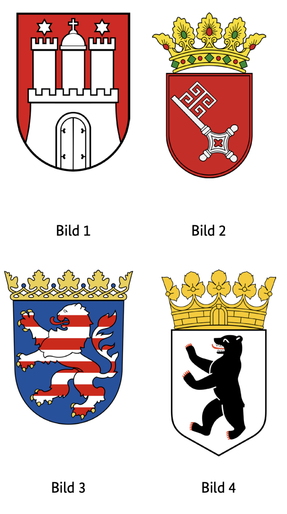
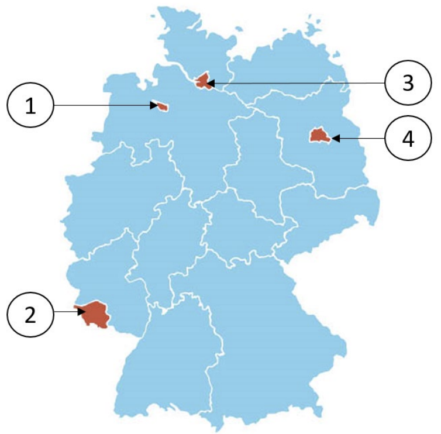

Resmi BAMF soru havuzundaki 10 Berlin (BE) eyalet sorusunun Almanca ve Türkçe açıklamalı interaktif çözümleri. Soru üzerine tıklayarak bilginizi anında test edin.
Almanya vatandaşlık ve kalıcı oturum için yapılan Leben in Deutschland (LiD) sınavında adaya toplam 33 çoktan seçmeli soru sorulur:
30 Genel Soru: Demokrasi, hukuk, tarih ve toplumsal yaşam (300 genel soru havuzundan).
3 Eyalet Sorusu: İkamet ettiğiniz eyalete özel tarih, coğrafya ve anayasa soruları (Aşağıdaki 10 eyalet sorusu havuzundan).
Sınavı geçmek için 33 sorudan en az 15 doğru (Vatandaşlık şartı) veya 17 doğru (Oryantasyon kursu başarı sertifikası) yapmanız gerekmektedir.
📝 10 Resmi Berlin Sorusunu Çözün
Soru #321 (1 / 10)Federal Eyalet: Berlin
Welches Wappen gehört zum Bundesland Berlin?
TR: Berlin devletine ait hangi arma var?

✅ Doğru Cevap: Şık D (Bild 4)
Bu görev, Alman federal eyaletleri ve onların resmi armalarıyla ilgilidir. Her federal eyaletin tarihsel ve kültürel önemi olan kendi ulusal amblemi vardır. Fotoğrafta veya görevde, numaralı birkaç arma tasvir edilmiştir. Soru, resmi olarak Berlin eyaletine ait olan armayı tanımlamanızı ve uygun numarayı seçmenizi istiyor.
In dieser Aufgabe geht es um die deutschen Bundesländer und ihre offiziellen Wappen. Jedes Bundesland besitzt ein eigenes Hoheitszeichen, das historische und kulturelle Bedeutungen hat. Auf dem Bild oder in der Aufgabe sind mehrere Wappen mit Nummern dargestellt. Die Frage fordert dazu auf, das Wappen zu identifizieren, das offiziell zum Bundesland Berlin gehört, und die passende Nummer auszuwählen.
This task is about the German federal states and their official coats of arms. Each federal state has its own national emblem, which has historical and cultural significances. On the picture or in the task, several coats of arms with numbers are depicted. The question asks you to identify the coat of arms, which officially belongs to the state of Berlin, and to select the appropriate number.
هذه المهمة تتعلق بالولايات الفيدرالية الألمانية وشعاراتها الرسمية. لكل ولاية اتحادية شعارها الوطني الخاص، الذي يحمل دلالات تاريخية وثقافية. في الصورة أو في المهمة، تظهر عدة شعارات بالنبالة تحمل أرقاما. يطلب منك السؤال تحديد شعار النبالة، الذي ينتمي رسميا إلى دولة برلين، واختيار الرقم المناسب.
Це завдання стосується німецьких федеративних земель та їхніх офіційних гербів. Кожна федеральна земля має власний національний герб, який має історичне та культурне значення. На зображенні або в завдання зображено кілька гербів із цифрами. Питання просить вас ідентифікувати герб, який офіційно належить землі Берлін, і обрати відповідний номер.
Soru #322 (2 / 10)Federal Eyalet: Berlin
Welches ist ein Bezirk von Berlin?
TR: Berlin'in bir ilçesi hangisi?
✅ Doğru Cevap: Şık C (Pankow)
Soru, Almanya'nın idari yapısıyla ilgilidir. Berlin, özel bir belediye yönetim biçimini temsil eden birkaç ilçeye ayrılmıştır. Cevap seçenekleri farklı coğrafi isimler içerir: Bazıları Berlin ilçeleri, diğerleri ise diğer federal eyaletler veya şehirlerdeki ilçeler veya bölgelerdir. Amaç, Berlin'e ait olan ilçeyi belirlemektir.
Die Frage bezieht sich auf die Verwaltungsstruktur Deutschlands. Berlin ist in mehrere Bezirke unterteilt, die eine besondere Form der kommunalen Verwaltung darstellen. Die Antwortmöglichkeiten enthalten verschiedene geografische Bezeichnungen: Einige sind Berliner Bezirke, andere sind Landkreise oder Stadtteile in anderen Bundesländern oder Städten. Ziel ist es, den Bezirk zu erkennen, der tatsächlich zu Berlin gehört.
The question relates to the administrative structure of Germany. Berlin is divided into several districts, which represent a special form of municipal administration. The answer options contain different geographical names: Some are Berlin districts, others are districts or districts in other federal states or cities. The aim is to identify the district that actually belongs to Berlin.
السؤال يتعلق بالهيكل الإداري لألمانيا. تنقسم برلين إلى عدة مناطق، تمثل نوعا خاصا من الإدارة البلدية. خيارات الإجابة تحتوي على أسماء جغرافية مختلفة: بعضها مناطق برلين، وأخرى مناطق أو مناطق في ولايات أو مدن اتحادية أخرى. الهدف هو تحديد المنطقة التي تنتمي فعليا إلى برلين.
Питання стосується адміністративної структури Німеччини. Берлін поділений на кілька районів, які представляють особливу форму муніципального управління. Варіанти відповіді містять різні географічні назви: деякі — берлінські округи, інші — округи або округи в інших федеральних землях або містах. Мета — визначити район, який фактично належить Берліну.
Soru #323 (3 / 10)Federal Eyalet: Berlin
Für wie viele Jahre wird das Landesparlament in Berlin gewählt?
TR: Berlin'deki devlet parlamentosu kaç yıl boyunca görev yapacak?
Seçildi?
✅ Doğru Cevap: Şık C (5)
Almanya'daki hayat için önemli bir soru
Wichtige Frage für das Leben in Deutschland
Important question for life in Germany
سؤال مهم للحياة في ألمانيا
Важливе питання для життя в Німеччині
Soru #324 (4 / 10)Federal Eyalet: Berlin
Ab welchem Alter darf man in Berlin bei Kommunalwahlen (Wahl der Bezirksverordnetenversammlung) wählen?
TR: Berlin'de yerel seçimlere katılma hangi yaştan itibaren izin veriliyor (seçim
İlçe meclisinin)?
✅ Doğru Cevap: Şık B (16)
Almanya'daki hayat için önemli bir soru
Wichtige Frage für das Leben in Deutschland
Important question for life in Germany
سؤال مهم للحياة في ألمانيا
Важливе питання для життя в Німеччині
Soru #325 (5 / 10)Federal Eyalet: Berlin
Welche Farben hat die Landesflagge von Berlin?
TR: Berlin devlet bayrağı hangi renklere sahip?
✅ Doğru Cevap: Şık B (weiß-rot)
Aşağıdaki soru, Almanya federal eyaletleri hakkında genel bilgiye atıfta bulunmaktadır. Özellikle, Berlin'in devlet bayrağı, yani Almanya başkentinin resmi bayrağı hakkındadır. Cevap seçeneklerine dayanarak, bu bayrağın hangi renklerden oluştuğu tespit edilebilmelidir. Soru, Almanya'nın ulusal ve bölgesel sembolleri hakkında bilgi test eder.
Die folgende Frage bezieht sich auf allgemeines Wissen über deutsche Bundesländer. Konkret geht es um die Landesflagge von Berlin, also die offizielle Flagge der deutschen Hauptstadt. Anhand der Antwortmöglichkeiten soll erkannt werden, aus welchen Farben diese Flagge besteht. Die Frage prüft Kenntnisse über nationale und regionale Symbole Deutschlands.
The following question refers to general knowledge about German federal states. Specifically, it is about the state flag of Berlin, i.e. the official flag of the German capital. Based on the answer options, it should be possible to recognize which colors this flag consists of. The question tests knowledge of national and regional symbols of Germany.
السؤال التالي يشير إلى المعرفة العامة حول الولايات الفيدرالية الألمانية. تحديدا، تتعلق بعلم الدولة في برلين، أي العلم الرسمي للعاصمة الألمانية. استنادا إلى خيارات الإجابة، يجب أن يكون من الممكن التعرف على الألوان التي يتكون منها هذا العلم. يختبر السؤال المعرفة بالرموز الوطنية والإقليمية لألمانيا.
Наступне питання стосується загальних знань про німецькі федеральні землі. Зокрема, йдеться про державний прапор Берліна, тобто офіційний прапор німецької столиці. На основі варіантів відповідей має бути можливо визначити, з яких кольорів складається цей прапорець. Питання перевіряє знання національних і регіональних символів Німеччини.
Soru #326 (6 / 10)Federal Eyalet: Berlin
Wo können Sie sich in Berlin über politische Themen informieren?
TR: Berlin'deki siyasi konuları nereden öğrenebilirsiniz?
?
✅ Doğru Cevap: Şık D (bei der Landeszentrale für politische Bildung)
Almanya'daki hayat için önemli bir soru
Wichtige Frage für das Leben in Deutschland
Important question for life in Germany
سؤال مهم للحياة في ألمانيا
Важливе питання для життя в Німеччині
Soru #327 (7 / 10)Federal Eyalet: Berlin
Welches Bundesland ist ein Stadtstaat?
TR: Hangi eyalet şehir-devlettir?
✅ Doğru Cevap: Şık A (Berlin)
Aşağıdaki soru Almanya'nın siyasi sistemine atıfta bulunmaktadır. Almanya, bazıları sözde şehir devletleri olan birkaç federal eyaletten oluşur. Şehir-devlet, yalnızca bir şehirden oluşan federal bir eyalettir. Bahsedilen seçeneklerden hangisi böyle bir şehir-devlet?
Die folgende Frage bezieht sich auf das politische System Deutschlands. Deutschland besteht aus mehreren Bundesländern, von denen einige sogenannte Stadtstaaten sind. Ein Stadtstaat ist ein Bundesland, das nur aus einer Stadt besteht. Welche der genannten Optionen ist ein solcher Stadtstaat?
The following question refers to the political system of Germany. Germany consists of several federal states, some of which are so-called city states. A city-state is a federal state that consists of only one city. Which of the options mentioned is such a city-state?
السؤال التالي يشير إلى النظام السياسي في ألمانيا. تتكون ألمانيا من عدة ولايات اتحادية، بعضها يسمى ما يسمى بدول المدن. مدينة-دولة هي ولاية اتحادية تتكون من مدينة واحدة فقط. أي من الخيارات المذكورة هو مثل هذه المدينة-الدولة؟
Наступне питання стосується політичної системи Німеччини. Німеччина складається з кількох федеральних земель, деякі з яких є так званими містами-державами. Місто-держава — це федеральна держава, яка складається лише з одного міста. Який із згаданих варіантів є таким містом-державою?
Soru #328 (8 / 10)Federal Eyalet: Berlin
Welches Bundesland ist Berlin?
TR: Berlin hangi eyalet?

✅ Doğru Cevap: Şık D (4)
Soru Almanya'nın federal yapısıyla ilgilidir. Almanya, 16 federal eyaletten oluşur ve bunların bazıları aynı zamanda şehir devletidir. Bir sınavda veya testte, katılımcılardan verilen cevap seçeneklerine göre Berlin'in hangi federal eyalet olduğunu seçmeleri istenir. A'dan D'ye olan seçenekler, numaralı cevapları temsil eder ve bunlardan biri doğru olarak seçilmelidir.
Die Frage bezieht sich auf die föderale Struktur Deutschlands. Deutschland besteht aus 16 Bundesländern, von denen einige gleichzeitig Stadtstaaten sind. In einem Quiz oder Test sollen die Teilnehmenden anhand von vorgegebenen Antwortmöglichkeiten auswählen, welches Bundesland Berlin ist. Die Optionen a bis d stehen dabei für nummerierte Antworten, aus denen eine als richtig ausgewählt werden soll.
The question relates to the federal structure of Germany. Germany consists of 16 federal states, some of which are also city states. In a quiz or test, participants are asked to choose which federal state is Berlin based on given answer options. Options a to d stand for numbered answers, from which one should be selected as correct.
السؤال يتعلق بالهيكل الفيدرالي لألمانيا. تتكون ألمانيا من 16 ولاية اتحادية، بعضها أيضا مدن. في اختبار أو اختبار، يطلب من المشاركين اختيار أي ولاية اتحادية هي برلين بناء على خيارات الإجابة المتاحة. الخيارات من أ إلى د ترمز إلى الإجابات المرقمة، والتي يجب اختيار واحدة منها على أنها صحيحة.
Питання стосується федеративної структури Німеччини. Німеччина складається з 16 федеральних земель, деякі з яких також є містами-державами. У тесті або тесті учасників просять обрати, яка федеральна земля є Берліном на основі заданих варіантів відповіді. Варіанти a до d означають нумеровані відповіді, з яких слід вибрати одну як правильну.
Soru #329 (9 / 10)Federal Eyalet: Berlin
Wie nennt man die Regierungschefin / den Regierungschef des Stadtstaates Berlin?
TR: Hükümet başkanına ne diyorsunuz?
Berlin şehir-devleti mi?
✅ Doğru Cevap: Şık D (Regierende Bürgermeisterin / Regierender Bürgermeister)
Almanya'daki hayat için önemli bir soru
Wichtige Frage für das Leben in Deutschland
Important question for life in Germany
سؤال مهم للحياة في ألمانيا
Важливе питання для життя в Німеччині
Soru #330 (10 / 10)Federal Eyalet: Berlin
Welche Senatorin / welchen Senator hat Berlin nicht?
TR: Berlin'de hangi senatör yok?
✅ Doğru Cevap: Şık C (Senatorin / Senator für Außenbeziehungen)
Berlin, Alman bir eyalet ve aynı zamanda bir şehir-devlettir. Eyalet hükümeti "Berlin Senatosu" olarak adlandırılır ve her biri Maliye, İçişleri veya Adalet gibi belirli bir departmanı yöneten Yönetici Belediye Başkanı ile birkaç senatörü içerir. Her siyasi faaliyet alanı eyalet düzeyinde mevcut değildir. Soru, bahsedilen senatörlük makamlarından hangilerinin Berlin Senatosu'nda bulunmadığını inceliyor.
Berlin ist ein deutsches Bundesland und zugleich Stadtstaat. Die Landesregierung heißt „Senat von Berlin“ und besteht aus dem Regierenden Bürgermeister bzw. der Regierenden Bürgermeisterin sowie mehreren Senatorinnen und Senatoren, die jeweils ein bestimmtes Ressort leiten, zum Beispiel Finanzen, Inneres oder Justiz. Nicht jedes politische Aufgabenfeld existiert auf Landesebene. Die Frage prüft, welches der genannten Senatorenämter es im Berliner Senat nicht gibt.
Berlin is a German state and at the same time a city-state. The state government is called the "Senate of Berlin" and consists of the Governing Mayor and several senators, each of whom heads a specific department, for example Finance, Interior Affairs or Justice. Not every political field of activity exists at the state level. The question examines which of the senatorial offices mentioned do not exist in the Berlin Senate.
برلين دولة ألمانية وفي الوقت نفسه مدينة-دولة. تسمى الحكومة المحلية "مجلس شيوخ برلين" وتتكون من العمدة الحاكم وعدة أعضاء مجلس شيوخ، كل منهم يرأس وزارة محددة، مثل المالية أو الشؤون الداخلية أو العدل. ليس كل مجال سياسي للنشاط موجودا على مستوى الولايات. يفحص السؤال أي من المناصب السيناتية المذكورة غير موجودة في مجلس شيوخ برلين.
Берлін — це німецька держава і водночас місто-держава. Уряд землі називається «Сенат Берліна» і складається з керуючого мера та кількох сенаторів, кожен з яких очолює певний департамент, наприклад, фінанси, внутрішні справи або юстицію. Не кожна політична сфера діяльності існує на рівні штатів. Питання розглядає, які з згаданих сенаторських посад не існують у Сенаті Берліна.
300 Genel Soruyu ve Eyalet Sorularını Eksiksiz Çalışın
DeutschLernen LiD Trainer'da tüm 310 soruyu 5 farklı dilde (Türkçe, İngilizce, Arapça, Ukraynaca, Almanca) çözebilir, deneme sınavı simülasyonu yapabilirsiniz.